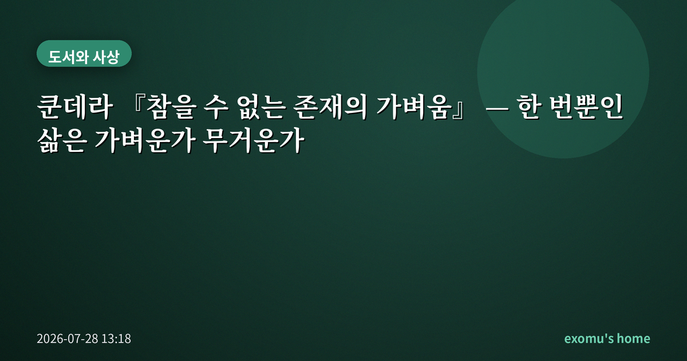
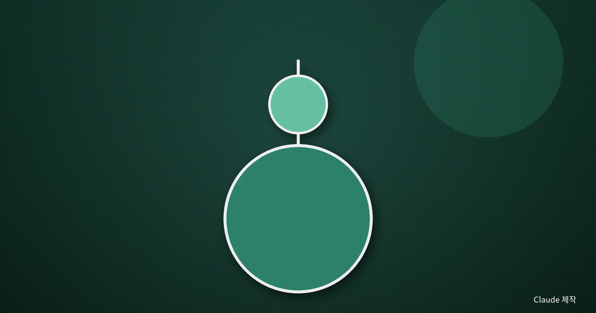
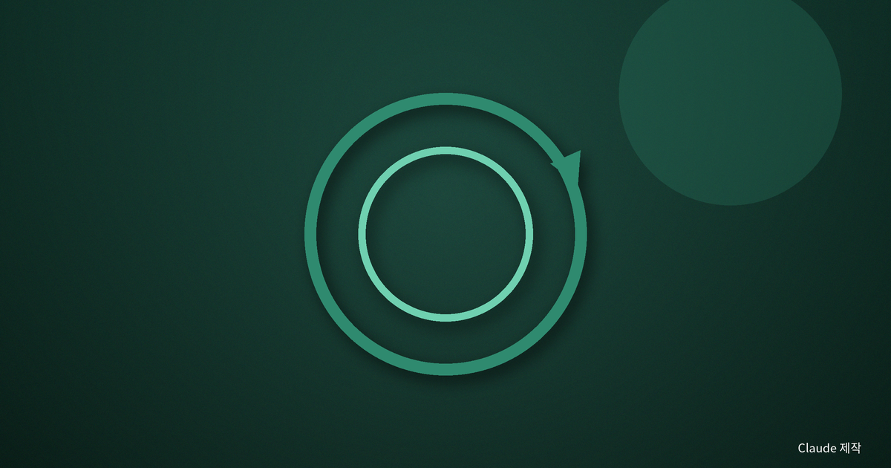
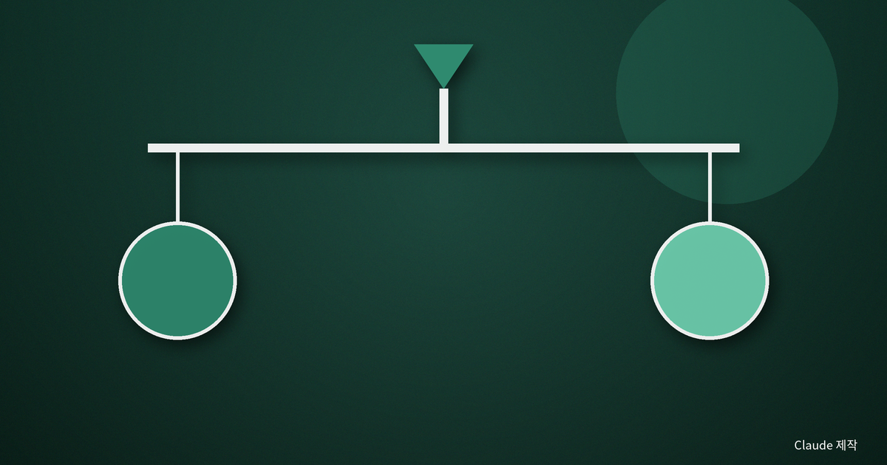
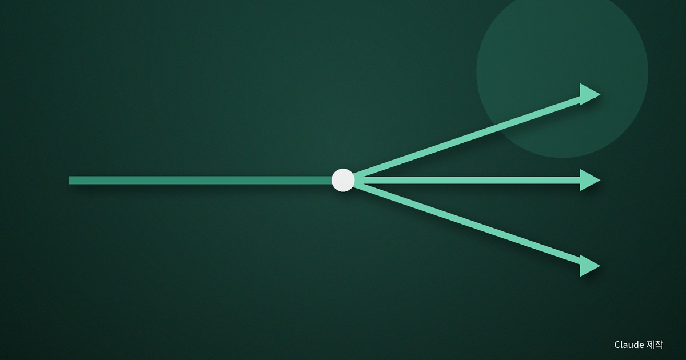

쿤데라 『참을 수 없는 존재의 가벼움』 — 한 번뿐인 삶은 가벼운가 무거운가

스무 살 무렵의 나는 '가볍다'는 말을 대체로 나쁜 뜻으로 썼다. 진지하지 못한 사람, 책임을 피하는 태도를 그렇게 불렀다. 그런데 밀란 쿤데라의 『참을 수 없는 존재의 가벼움』을 처음 덮었을 때, 나는 가벼움이 그렇게 간단히 나쁜 것으로 치워질 개념이 아니라는 걸 알았다.
한 번뿐이라는 사실의 무게
소설은 첫 장부터 큰 그림을 던진다. 우리의 삶은 단 한 번뿐이다. 리허설도 없고, 다른 판본과 비교할 수도 없다. 어떤 선택이 옳았는지 두 번 살아보고 확인할 길이 없으니, 모든 결정은 스케치처럼 가벼워진다. 무게를 실을 기준 자체가 없기 때문이다.
쿤데라는 이 '한 번뿐임'을 라틴어 격언으로 압축한다. 한 번은 없는 것과 같다. 딱 한 번 일어난 일은 반복되지 않으므로, 마치 일어나지 않은 것처럼 가벼이 흩어진다는 것이다. 나는 이 문장 앞에서 오래 멈췄다. 우리가 겪는 대부분의 일은 정확히 한 번만 일어난다. 첫 만남도, 어떤 이별도, 어느 여름의 저녁 공기도. 그렇다면 내 삶의 거의 전부는 이 논리대로라면 깃털처럼 가벼운 셈이 된다.

영원히 반복된다면
쿤데라가 대비로 끌어오는 것은 어느 독일 철학자의 사고실험이다. 만약 당신의 삶이, 지금 이 순간까지 포함해, 똑같이 무한히 반복된다면 어떨까. 사소한 손짓 하나까지 영원히 되풀이된다면, 모든 행위에는 견딜 수 없는 무게가 실린다. 다시는 못 무를 일이 영원히 새겨지기 때문이다.
이 사고실험의 요점은 미래 예언이 아니다. 그것은 '지금 이 삶을 영원히 되풀이해도 좋다고 긍정할 수 있는가'라는 시험이다. 반복을 견딜 만큼 사랑할 수 있는 삶인가. 무게는 그렇게 저주이면서 동시에 삶을 진지하게 만드는 힘이 된다.
나는 이 질문을 실제로 나에게 던져 본 적이 있다. 오늘 하루를, 지루한 회의와 사소한 말다툼까지 통째로, 영원히 다시 산다고 상상하자 갑자기 시간의 밀도가 달라졌다. 되돌릴 수 없이 흩어지는 하루라고 여길 때와, 영원히 새겨질 하루라고 여길 때, 같은 오후가 전혀 다른 무게로 다가왔다.

가벼움은 자유인가 상실인가
여기서 저울의 양쪽이 팽팽해진다. 무게가 없으면 인간은 공기보다 자유롭게 떠오르지만, 동시에 발이 땅에 닿지 않아 실재감을 잃는다. 반대로 무게가 있으면 짓눌리지만, 바로 그 눌림 속에서 삶은 가장 생생하고 진실해진다. 소설의 인물들은 저마다 이 축의 한쪽으로 기운다. 얽매임을 거부하며 가벼움을 택한 이도, 사랑의 무게를 끝내 끌어안는 이도 있다.
고대의 한 철학자는 세계를 가벼움과 무거움 같은 대립쌍으로 나누어 보았는데, 어느 쪽이 긍정이고 어느 쪽이 부정인지는 끝내 자명하지 않았다. 쿤데라도 답을 정해주지 않는다. 그는 다만 우리에게 저울을 쥐여줄 뿐이다. 나는 이 유보가 이 소설의 가장 정직한 부분이라고 생각한다. 삶의 무게에 정답이 있다고 말하는 순간, 그 답은 또 하나의 이데올로기가 되어 우리를 짓누를 테니까.

나의 선택으로 돌아와
다시 읽은 지금의 나는, 가벼움과 무거움이 사람의 두 유형이 아니라 한 사람 안에서 매일 오가는 진자라고 느낀다. 어떤 날은 책임의 무게가 나를 붙들어 성실하게 만들고, 어떤 날은 '어차피 한 번뿐'이라는 가벼움이 나를 새 일에 뛰어들게 한다.
중요한 건 어느 쪽이 옳으냐가 아니라, 내가 지금 어느 쪽으로 기울어 있는지를 아는 일이다. 이 하루를 영원히 반복해도 좋겠냐고 스스로 물어보는 것—쿤데라가 남긴 그 질문은, 오늘 무엇에 마음을 쓸지 고르는 아주 실용적인 저울이 되어 준다.
그래서 나는 이 소설을 연애소설로도, 정치소설로도, 철학책으로도 읽는다. 그러나 무엇으로 읽든 마지막에 남는 것은 한 문장이다. 한 번뿐이어서 가벼운 이 삶을, 그럼에도 영원히 반복해도 좋을 만큼 정성껏 살 수 있는가. 이 물음에 매번 다르게 답하며 사는 것, 어쩌면 그것이 인간이 가벼움과 무거움 사이에서 취할 수 있는 유일한 균형인지도 모른다.
